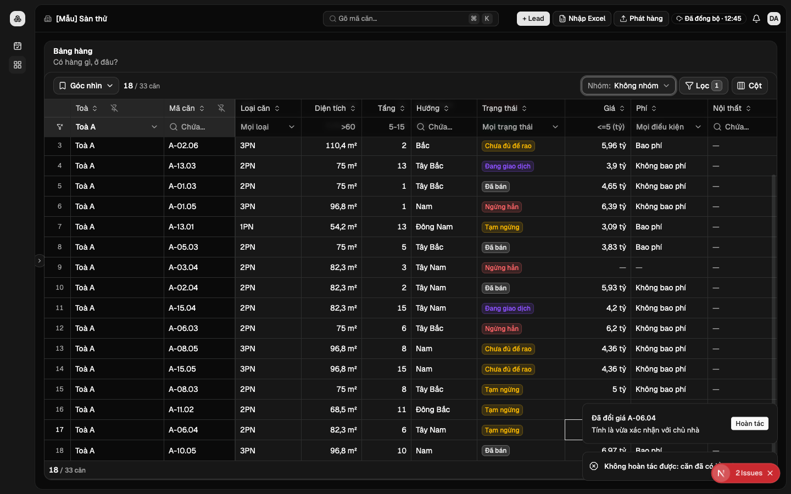
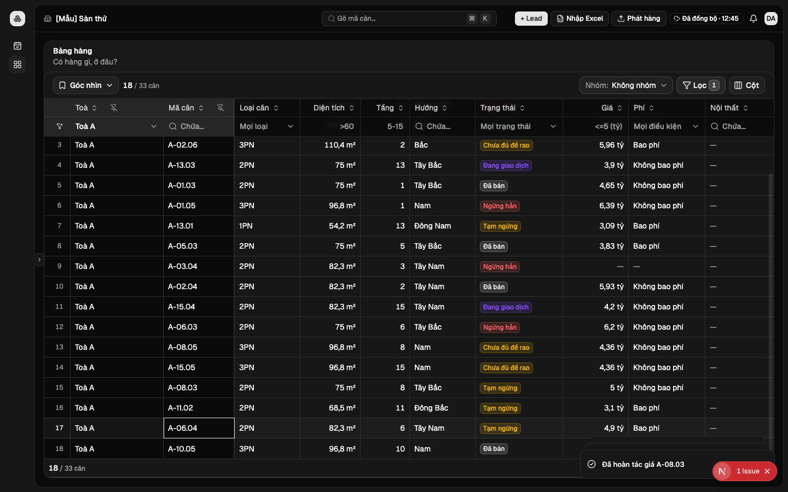
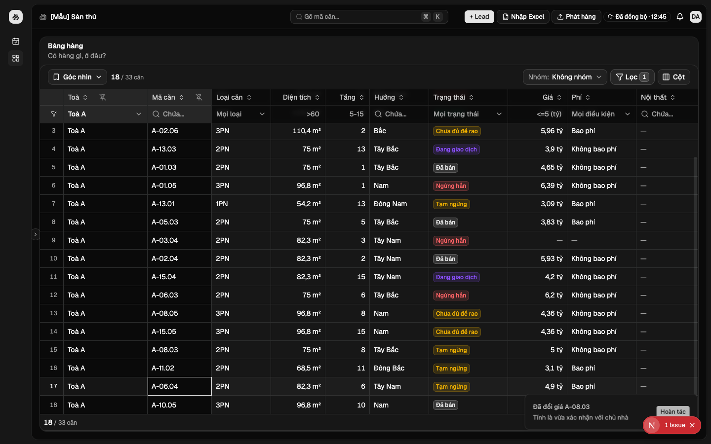
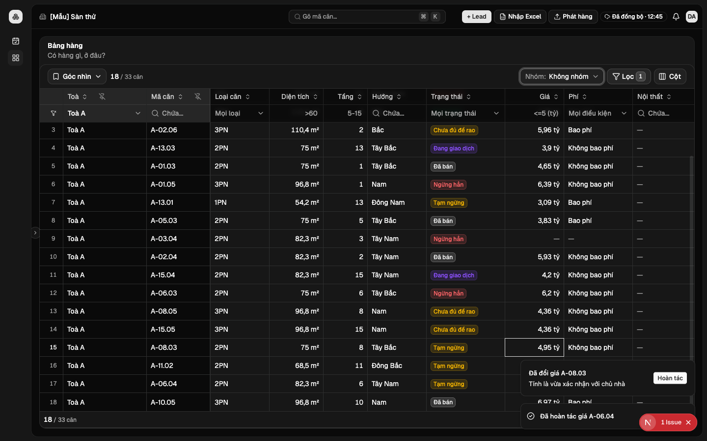
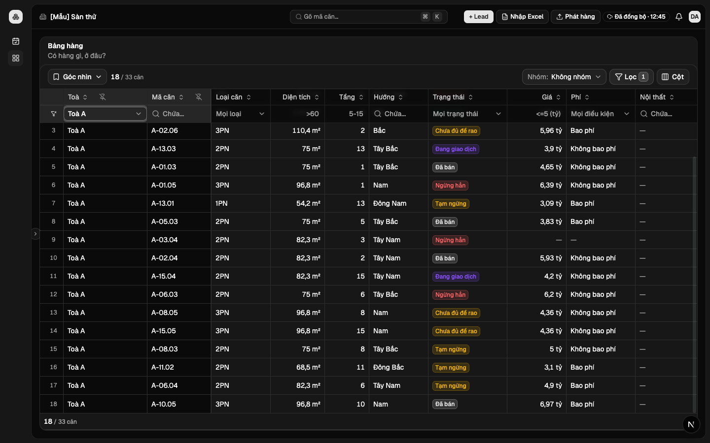
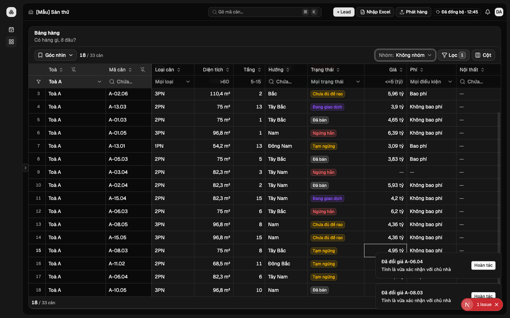

"Vá sửa trên ô: dòng «Hiểu là» đọc lại đúng số máy ghi, không làm tròn; nút Hoàn tác trên thông báo hoàn tác đúng lần sửa của chính nó và không ghi đè lần sửa sau"
Vì sao làm
Hàng phát sinh của đợt (dãy B), giám sát xếp 01/11 sau Cổng Bằng chứng hàng 15 (sua-tren-o): gộp hai mục chủ kho chọn «mở hợp đồng mới» — Ngoài-2 (đọc lại làm tròn) và Ngoài-3 (Hoàn tác trên thông báo cũ đảo nhầm hay im lặng). Ranh giới: packages/core/src/pricing/, apps/web/src/app/(app)/inventory/cell-edit/, _acceptance/va-sua-tren-o/**; cộng hàng lộ trình máy thêm (docs/plan/lo-trinh.json, giám sát cho, B-16) và tệp vẽ lại.
Đã hứa
- AC-1 — Given bộ viết giá `vietGia` và bộ đọc `docGia` ở `packages/core/src/pricing/`, When viết rồi đọc lại một bảng số
- AC-2 — Given trình sửa Giá, When gõ «4,655 tỷ», «4 tỷ 655», «1,5 triệu» hay giá chốt «4,6505 tỷ», Then dòng «Hiểu là: …»
- AC-3 — Given căn đang giá 4.655.000.000, When mở ô Giá, Then ô gõ điền sẵn «4,655 tỷ»; Enter không gõ gì thì sự kiện
- AC-4 — Given đầu chủ sửa giá căn A rồi sửa giá căn B (hai thông báo cùng hiện), When bấm «Hoàn tác» trên thông báo của
- AC-5 — Given một thông báo của lần sửa căn A, When căn A đã có lần sửa sau (của chính người này hay người khác, kéo về
- AC-6 — Given một lần sửa vừa ghi, When hoàn tác bằng nút trên thông báo rồi bấm Ctrl/Cmd+Z, hay bấm Ctrl/Cmd+Z rồi bấm
- AC-7 — Given cây sau hàng này, When chạy kiểm kiểu, lint (luật `quy-hang-ui`, mức nợ 0), bộ test và sàn thiết kế, Then
Thiết kế
_acceptance/va-sua-tren-o/design.md
Quyết định
- 2026-11-01 · Máy · approach · S1 — Đã tra tri thức: Vá sửa trên ô: dòng «Hiểu là» đọc lại đúng số máy ghi, không làm tròn; nút Hoàn tác trên thông báo hoàn tác đúng lần sửa của chính nó và không ghi đè lần sửa sauKho đã khai tri_thuc — bước thiết kế tra trang trước khi chọn.
- 2026-11-01 · Máy · approach · S1 — Máy đọc lại giá đúng từng đồng sẽ ghi (vietGia không làm tròn, không dấu chấm nghìn) thay vì từ chối chữ có nhiều số lẻ hơn mức hiển thị.Giá như 4 tỷ 655 triệu là giá thật của nghề; từ chối «4,655 tỷ» là chặn một giá đúng, còn đọc lại đúng từng đồng giữ được cả hai: người thấy đúng số máy ghi.
- 2026-11-01 · Máy · approach · S1 — Nút Hoàn tác trên mỗi thông báo gắn đúng lần sửa của nó; căn đã có lần sửa sau (của mình hay người khác) thì không ghi gì và báo «Không hoàn tác được: căn đã có lần sửa sau».Hoàn tác đè lên lần sửa sau là ghi đè lặng — trái điều hàng 15 đã ký ở AC-9.
- 2026-11-01 · Máy · approach · S1 — Nhận biết «căn đã có lần sửa sau» bằng phiên bản trên máy của căn so với phiên bản ngay sau lần sửa, không so giá trị.So giá trị cho qua ca người khác sửa rồi đổi lại đúng giá cũ, hoàn tác khi ấy đè lên hai lần sửa người chưa thấy; phiên bản đổi ở mọi lần ghi nên chặn được mọi ca.
- 2026-11-01 · Máy · descope · S1 — bỏ design-pass — không có màn, trình sửa hay ô mới; chỉ đổi chữ số trong dòng đọc lại và hành vi nút Hoàn tác đã có, các bài nhìn E3, E5 chụp đủ trạng tháiBố cục, thành phần và khối giữ nguyên hàng 15 đã duyệt trên bản bấm được (_acceptance/sua-tren-o/design-pass.md).
- 2026-11-01 · Máy · approach · S1 — Hỏi: căn đã có lần sửa sau thì nút Hoàn tác trên thông báo cũ làm gì? Nháp theo khuyến nghị: không ghi gì, báo «Không hoàn tác được: căn đã có lần sửa sau».Câu trích AC-9 hàng 15 chỉ quyết hai người cùng sửa thì vào «Cần xem», không quyết lối của nút Hoàn tác cũ; phản biện context sạch chỉ ra lối khác còn sống (gap-probe P0).
- 2026-11-01 · Người · seal · gate1 —
- 2026-11-01 · Máy · fix · S4-r1 — Lệnh bù của Hoàn tác mang phiên bản vừa xét, để lần sửa của người khác kéo về chen giữa lúc bấm và lúc ghi thành xung đột vào «Cần xem», không bị đè.Phát hiện trong hợp đồng của vòng 1 (AC-5, review-findings.md): tren-o.tsx gọi sua() không truyền coSo nên khe giữa xét và ghi vẫn ghi đè được.
- 2026-11-01 · Máy · revisit · gate2 — Ngoài-1: ghi Known limitsmáy tự định tuyến theo đề xuất S4 «known-limits» — kho bật feature_loop.ngoai_n_tu_dinh_tuyen
- 2026-11-01 · Máy · revisit · gate2 — Ngoài-3: ghi Known limitsmáy tự định tuyến theo đề xuất S4 «known-limits» — kho bật feature_loop.ngoai_n_tu_dinh_tuyen
- 2026-11-01 · Máy · revisit · gate2 — Ngoài-4: ghi Known limitsmáy tự định tuyến theo đề xuất S4 «known-limits» — kho bật feature_loop.ngoai_n_tu_dinh_tuyen
- 2026-11-01 · Máy · revisit · gate2 — Ngoài-5: ghi Known limitsmáy tự định tuyến theo đề xuất S4 «known-limits» — kho bật feature_loop.ngoai_n_tu_dinh_tuyen
Bằng chứng
Các eval
| Eval | Tiêu chí | Loại | Verdict | run_id | verified_at |
|---|---|---|---|---|---|
| E1 | AC-1 | test | PASS | minted-va-sua-tren-o-E1-r1 | 2026-11-01T05:28:51Z |
| E2 | AC-2 | test | PASS | minted-va-sua-tren-o-E2-r2 | 2026-11-01T05:39:40Z |
| E3 | AC-3 | ui-check | PASS | minted-va-sua-tren-o-E3-r2 | 2026-11-01T05:39:40Z |
| E4 | AC-5 | test | PASS | minted-va-sua-tren-o-E4-r2 | 2026-11-01T05:39:40Z |
| E5 | AC-4 | ui-check | PASS | E5-va-sua-tren-o-verifier-20261101 | 2026-11-01T05:39:40Z |
| E5b | AC-5 | ui-check | PASS | E5b-20261101-verifier-r2 | 2026-11-01T05:39:40Z |
| E5c | AC-6 | ui-check | PASS | minted-va-sua-tren-o-E5c-r2 | 2026-11-01T05:39:40Z |
| E6 | AC-6 | test | PASS | minted-va-sua-tren-o-E6-r2 | 2026-11-01T05:39:40Z |
| E7 | AC-7 | script | PASS | minted-va-sua-tren-o-E7-r2 | 2026-11-01T05:39:40Z |
| E8 | AC-7 | script | PASS | minted-va-sua-tren-o-E8-r2 | 2026-11-01T05:39:40Z |
| E9 | AC-7 | script | PASS | minted-va-sua-tren-o-E9-r2 | 2026-11-01T05:39:40Z |
| E10 | AC-7 | script | PASS | minted-va-sua-tren-o-E10-r1 | 2026-11-01T05:28:51Z |
Chi tiết từng eval
PASS E1 · test
AC-1: Given bộ viết giá `vietGia` và bộ đọc `docGia` ở `packages/core/src/pricing/`, When viết rồi đọc lại một bảng số
carry-forward tu round 1 — delta khong cham paths cua eval
PASS E2 · test
AC-2: Given trình sửa Giá, When gõ «4,655 tỷ», «4 tỷ 655», «1,5 triệu» hay giá chốt «4,6505 tỷ», Then dòng «Hiểu là: …»
ℹ duration_ms 192.000166
PASS E3 · ui-check
AC-3: Given căn đang giá 4.655.000.000, When mở ô Giá, Then ô gõ điền sẵn «4,655 tỷ»; Enter không gõ gì thì sự kiện
PASS E4 · test
AC-5: Given một thông báo của lần sửa căn A, When căn A đã có lần sửa sau (của chính người này hay người khác, kéo về
ℹ duration_ms 192.000166
PASS E5 · ui-check
AC-4: Given đầu chủ sửa giá căn A rồi sửa giá căn B (hai thông báo cùng hiện), When bấm «Hoàn tác» trên thông báo của







PASS E5b · ui-check
AC-5: Given một thông báo của lần sửa căn A, When căn A đã có lần sửa sau (của chính người này hay người khác, kéo về
PASS E5c · ui-check
AC-6: Given một lần sửa vừa ghi, When hoàn tác bằng nút trên thông báo rồi bấm Ctrl/Cmd+Z, hay bấm Ctrl/Cmd+Z rồi bấm
PASS E6 · test
AC-6: Given một lần sửa vừa ghi, When hoàn tác bằng nút trên thông báo rồi bấm Ctrl/Cmd+Z, hay bấm Ctrl/Cmd+Z rồi bấm
ℹ duration_ms 192.000166
PASS E7 · script
AC-7: Given cây sau hàng này, When chạy kiểm kiểu, lint (luật `quy-hang-ui`, mức nợ 0), bộ test và sàn thiết kế, Then
PASS E8 · script
AC-7: Given cây sau hàng này, When chạy kiểm kiểu, lint (luật `quy-hang-ui`, mức nợ 0), bộ test và sàn thiết kế, Then
chuẩn giao diện: đạt
PASS E9 · script
AC-7: Given cây sau hàng này, When chạy kiểm kiểu, lint (luật `quy-hang-ui`, mức nợ 0), bộ test và sàn thiết kế, Then
PASS E10 · script
AC-7: Given cây sau hàng này, When chạy kiểm kiểu, lint (luật `quy-hang-ui`, mức nợ 0), bộ test và sàn thiết kế, Then
carry-forward tu round 1 — delta khong cham paths cua eval
Eval không phân biệt (Analyst)
Vòng verify
- Round 1: PASS, 5 phat hien (1 trong hop dong) — lenh bu cua Hoan tac chua mang phien ban vua xet; sua o commit 6eb8072.
- Round 2: E2, E3, E4, E5, E5b, E5c, E6, E7, E8, E9 chay lai deu dat; E1 va E10 carry-forward tu round 1.
Tài nguyên
| Khối | Tác tử | Token đầu ra |
|---|---|---|
| S4 vòng 1 | 22 | 130.902 |
| S4 vòng 2 | 19 | 129.321 |
2 lượt chấm · tổng 260.223 token
Giới hạn và ngoài hợp đồng
- Cột Giá của Bảng hàng (hàng 14) vẫn viết gọn hai số lẻ — ngoài vùng, hàng sau nếu cần.
- Ghi lỗi rồi Ctrl/Cmd+Z đảo lần sửa thành công trước (Ngoài-4 hàng 15, chủ kho đã chọn Known limits).
- Làm chặt các bài tự kiểm của hàng 15 (Ngoài-5 tới 9).
Giao
chưa ghi quan sát production